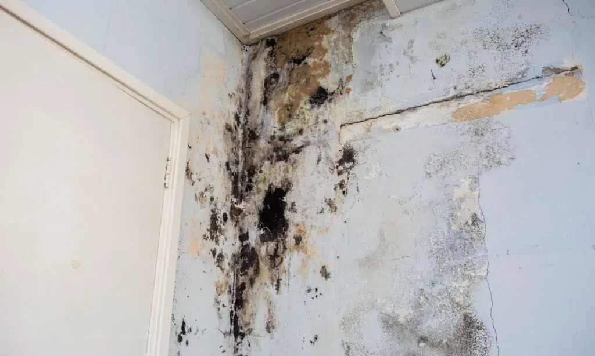
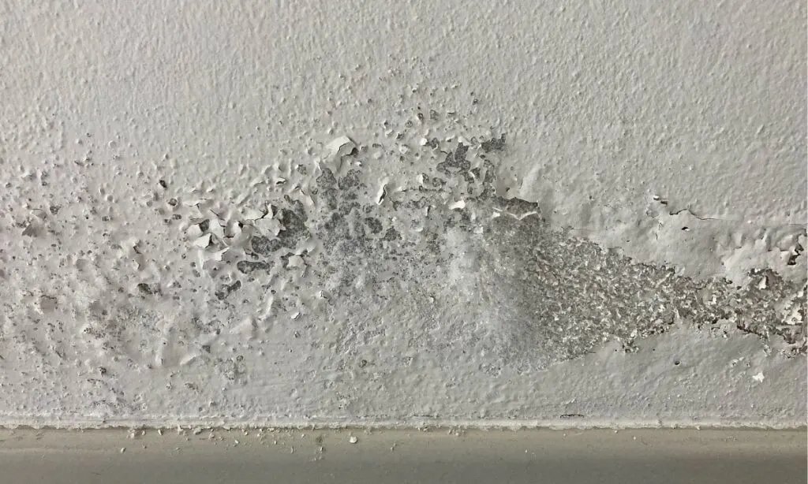

A room taken out of service, a hospital wing undergoing decontamination or a stockroom threatened by fungi can all start at the same point: moisture accumulated on vulnerable surfaces. For hotels, hospitals, food industries, condominiums and managers of large properties, mold goes beyond an aesthetic problem and becomes a matter of maintenance costs, health risks and operational disruptions.
Research carried out in Brazil and abroad seeks to tackle part of this problem with paints, ceramics, sealants and coatings that incorporate nanomaterials. Depending on their composition, these solutions can hinder fungal growth, reduce porosity, repel water or break down contaminants deposited on surfaces.

One of the materials studied in Brazil combines nanostructured silver vanadate and silver nanoparticles. “When it comes into contact with the microorganism, this material is able to alter its morphology and metabolism, leading to cell death,” explained Andréa Cândido dos Reis, professor at the Ribeirão Preto School of Dentistry of the University of São Paulo (FORP-USP), in an interview published by the USP News Agency.
The group led by the researcher tested the compound against bacteria and fungi in dental materials. The same technology was also investigated by scientists at the State University of Campinas (Unicamp) as an antimicrobial additive for water-based paints, with possible applications in kitchens, bathrooms and hospital environments.
A risk to operations
In the hotel industry, the combination of moisture, closed environments and insufficient ventilation favors mold growth in rooms, bathrooms, corridors and air-conditioning systems. The problem intensifies in coastal resorts and properties that keep part of their rooms closed during the low season. Sea air accelerates material wear, while persistent moisture creates the conditions needed for fungal growth.

The consequences can show up as unavailable rooms, more renovations and a worse guest experience. An analysis by EHL Hospitality Business School links the presence of mold in hotels to higher corrective maintenance and renovation costs, as well as impacts on indoor environmental quality.
In hospitals, laboratories and clinics, control must be even stricter. The US Centers for Disease Control and Prevention (CDC) warns that the accumulation of dust and moisture in air-conditioning systems increases the risk of spreading fungi and bacteria associated with healthcare settings.
The same applies to food industries and storage centers. The Food and Drug Administration (FDA) points out that the air in a processing facility can carry mold, yeasts, dust and other contaminants when environmental conditions are not properly controlled.
Surfaces that react
Applying nanotechnology changes the role played by the coating. Paint no longer acts merely as a covering and can be given properties capable of interfering with the settlement and multiplication of microorganisms.
Silver, copper and zinc oxide nanoparticles are among the materials investigated for their antimicrobial action. The mechanisms vary: they may involve damage to the cell wall and membrane, ion release, metabolic changes and the production of reactive oxygen species. With its structure compromised, the fungus loses the ability to form and expand its colonies.

Performance does not come from the choice of chemical element alone. Size, shape, concentration, dispersion and interaction with the paint change the result. A study published in the journal Progress in Organic Coatings compared metallic nanoparticles in paints for indoor environments and found stronger antifungal action in the smallest silver particles tested.
Other nanomaterials play different roles. Nanosilica can fill voids and contribute to a less permeable structure in cementitious matrices. Hydrophobic coatings reduce the surface's contact with water. Titanium dioxide, when activated by light, can trigger reactions capable of breaking down organic matter and contaminants.
Copper at the nanoscale
At the nanoscale, the higher surface-to-volume ratio increases copper's contact with microorganisms. Metallic copper and copper oxide nanoparticles can release ions, cause oxidative stress and compromise the membranes, proteins and metabolic processes of fungi.
A study published in Progress in Organic Coatings evaluated copper, silver and zinc oxide nanoparticles as additives in water-based paints for indoor environments. The materials were tested against Chaetomium globosum and Alternaria alternata, fungi isolated from contaminated paints. The copper nanoparticles inhibited the growth of both microorganisms, and paint performance increased with the additive's concentration.
The smallest silver nanoparticles showed the highest efficiency in that experiment, but the results confirmed nanocopper as a route to coatings with antifungal action. The element's industrial availability and the possibility of using it in paints, plastics, fabrics and metal surfaces increase interest in copper-based solutions.
“Copper has been known for millennia for its bactericidal, virucidal and fungicidal effect,” says Éder Lopes, professor at Unicamp's School of Mechanical Engineering, in a report published by the university's Innovation Agency. The team developed a technology at microparticle scale, different from nanocopper, but based on the same ability of the element to give surfaces antimicrobial properties.
Different formulations
Copper can appear in coatings as a metallic nanoparticle, copper oxide or a component of hybrid materials. Each configuration changes ion release, interaction with microorganisms, adhesion and durability.
In research published in 2026 in the Journal of Applied Microbiology, coatings of pure copper, copper oxynitride and copper-doped titanium dioxide reduced spore germination and fungal colonization on agricultural surfaces. The formulations were evaluated in the laboratory and under real protected-cultivation conditions.
Prolonged exposure to moisture caused wear on part of the surfaces, although the antifungal action remained in areas with higher copper concentration. The result shows why microbiological efficiency and physical resistance need to be analyzed together before a technology reaches the market.
Other nanomaterials play different roles. Nanosilica can fill voids and contribute to a less permeable structure in cementitious matrices. Hydrophobic coatings reduce the surface's contact with water. Titanium dioxide, when activated by light, can trigger reactions capable of breaking down organic matter and contaminants.
Far beyond fungi
Researchers from USP and São Paulo State University (Unesp) developed a coating made of silica and titanium dioxide nanoparticles for ceramic floors. After 30 minutes under ultraviolet radiation, the treated tiles broke down 90% of the dye used to simulate dirt. On conventional floors, the rate was 30%.
“In outdoor environments, for example, the coating can be useful for preserving building structures and walls, as it prevents the accumulation of contaminants,” said Elias Paiva Ferreira Neto, a researcher at Unesp's Institute of Chemistry, to Jornal da USP.
When the result was announced, the coating's activity against fungi, viruses and bacteria was still to be tested. The distinction matters: self-cleaning, antifungal and waterproofing properties can coexist in certain formulations, but they are not automatic features of any product that uses nanotechnology.
Control starts with water
No coating eliminates the need to fix leaks, seepage, condensation, waterproofing failures or problems in the air-conditioning system. The US Environmental Protection Agency (EPA) recommends that any mold control plan begin by identifying and correcting the source of moisture. Without this step, the problem tends to return.

For companies, nanocoatings come in as an additional layer of protection. They can extend the preservation of surfaces, reduce colony formation and make maintenance easier, as long as they are applied within the conditions for which they were developed and tested.
Adoption also requires technical evaluation. Durability, adhesion, antifungal activity, leaching and environmental safety tests must accompany the compatibility analysis for each surface. The term “nano,” on its own, does not prove performance.
Science applied to the market
The interest of hotels, hospitals, builders, industries and property managers shows how a change produced at the nanoscale can reach costs that appear directly on companies' balance sheets. The value lies not only in fighting a stain on the wall, but in developing materials capable of extending the service life of structures, reducing corrective interventions and protecting sensitive operations.
By following these applications, NanoBrasil brings scientific research closer to sectors seeking materials with measurable performance. The next step for manufacturers and user companies is to turn properties observed in the laboratory into products validated for real conditions of humidity, exposure, cleaning and continuous use.